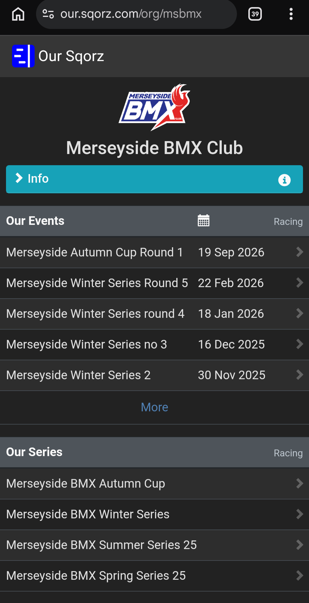
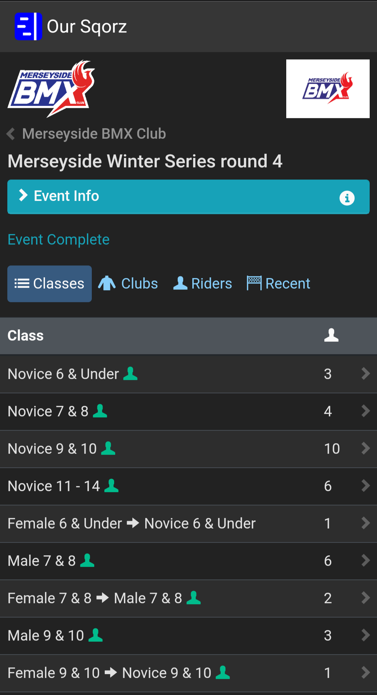
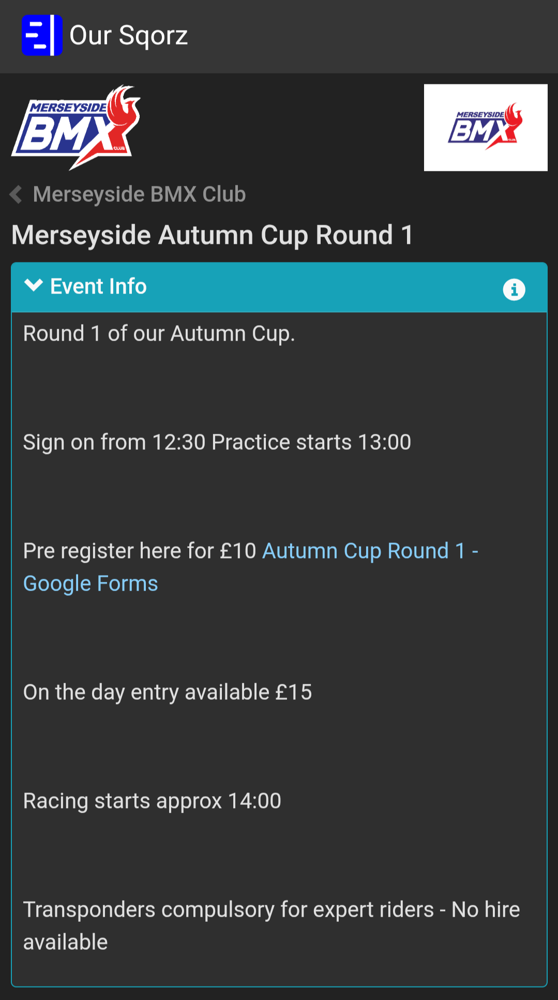
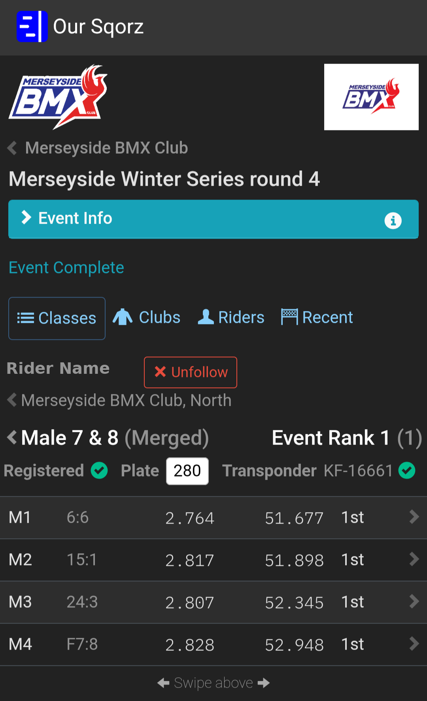
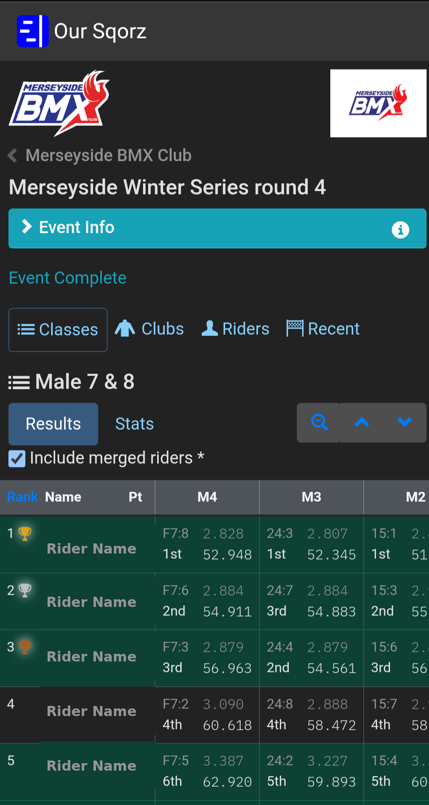

Everything you need to know for race day at Merseyside BMX Club: paying and registering, how the racing format works, series scoring and a full walkthrough of Sqorz.
Registration and practice times can vary from round to round, so always check the event page on Sqorz for the exact times before you travel.
Pay at the registration desk in the green cabin. For novice riders, this also registers you for the round.
Pay at the green cabin as normal. You're registered automatically via your transponder during practice.
Novice and expert classes are split by age. Groups may be merged on the day depending on rider numbers, but overall series ranking is always determined by class.
Riders earn points based on their finishing position at each round. Your best 3 rounds count towards your final points total, which determines your series finishing position.
We use Sqorz to run registration, race draws and results. Here's how to find your way around it on race day.

From the club page you can open the current event, for example Autumn Cup Round 1, view previous events, and see series leaderboards.


Once Sqorz is updated, check your rider's page. You'll see a green tick next to Registered once they're signed in, and another once their transponder has been picked up by the system.

Once practice is complete, the races (Motos) are drawn. On your rider's page you'll see each Moto with two numbers separated by a colon.
There are 10 pens. Riders go to the pen matching the last digit of their race number.
Our pen marshals will call each race forward and tell riders when to go to the start hill. Riders line up in the gate shown as the second number on Sqorz.
Moto results appear on Sqorz shortly after each race. Riders with transponders will see their gate time and lap time, with final positions available very quickly.

After each Moto round there's a short break before riders are recalled to the pens for the next race.
Race days are about having fun, gaining experience and enjoying racing as a family, not just chasing results. Every gate drop makes you a better rider, whatever the result.